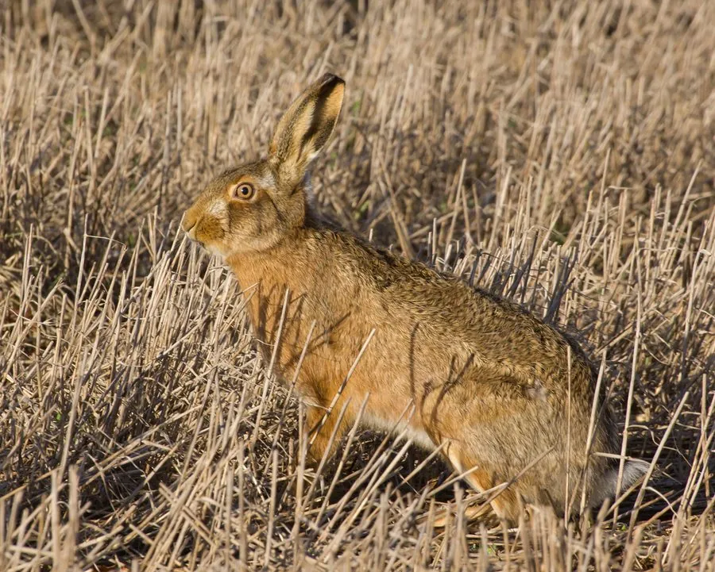

哺乳动物 · 动物界
欧洲野兔 Lepus europaeus

欧洲和西亚开阔地带的野兔，四肢修长、耳朵长，奔跑时速可达 70 公里，幼兔出生即有毛、睁眼，与穴兔不同。
- 分类
- 门脊索动物门纲哺乳纲目兔形目科兔科属兔属
- 栖息环境
- 开阔草原、农田、灌丛与林缘
- 地理分布
- 欧洲、西亚和中亚，被引入澳大利亚、新西兰和美洲
- 保护级别
- IUCN 无危（LC）；非中国分布物种
物种志
欧洲野兔体长 50–70 厘米，体重 3–5 千克，雌性略大。它的毛色为黄褐至灰褐色，夹杂黑色斑点，腹部白色；耳朵长而尖端黑色，四肢修长，后肢特别发达，善于奔跑。与穴兔不同，欧洲野兔不挖洞穴，幼兔出生时就有毛、眼睛睁开，能很快活动。
欧洲野兔分布于欧洲、西亚和中亚的开阔草原、农田和灌丛，被引入澳大利亚、新西兰和美洲等地。它夜间和晨昏活动，以草、农作物、树皮和嫩枝为食，遇险时依靠高速奔跑和急转弯逃避天敌。雌性妊娠期约 41–42 天，每年可繁殖 2–4 胎，每胎 2–4 仔，寿命约 5–10 年。欧洲野兔被列为无危，但在部分引入地区成为农业害兽。
形态与习性
- 食性草、农作物、树皮与嫩枝
- 体长50–70 cm
- 体重3–5 kg
- 寿命5–10 年
- 繁殖妊娠约 41–42 天，每年 2–4 胎
- 速度时速可达 70 km
趣味知识
- 欧洲野兔奔跑时速可达 70 公里，靠急转弯甩开天敌。
- 它的幼兔出生时就有毛、睁着眼，与穴兔完全不同。
- 欧洲野兔不挖洞，白天躲在草丛中休息。